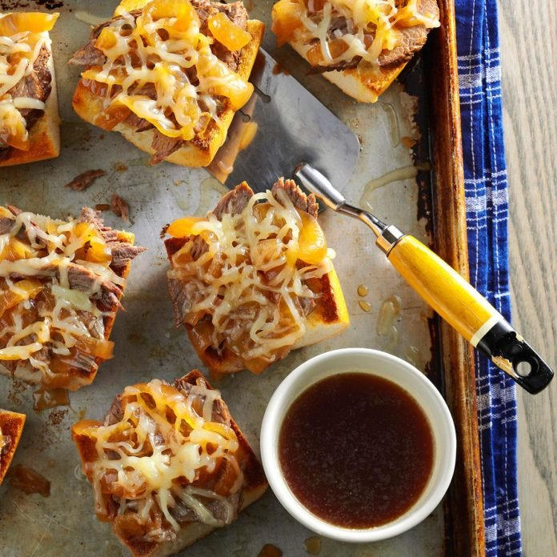

Recipe Page
Onion Beef au Jus
Ingredients
- 1 beef rump roast or bottom round roast (4 pounds)
- 2 tablespoons canola oil
- 2 large sweet onions, cut into 1/4-inch slices
- 6 tablespoons butter, softened, divided
- 5 cups water
- 1/2 cup reduced-sodium soy sauce
- 1 envelope onion soup mix
- 1 garlic clove, minced
- 1 teaspoon browning sauce, optional
- 1 loaf (1 pound) French bread
- 1 cup shredded Swiss cheese
Directions
- In a Dutch oven over medium-high heat, brown roast on all sides in oil; drain. In a large
skillet, saute onions in 2 tablespoons of butter until tender. Add the water, soy sauce,
soup mix, garlic and, if desired, browning sauce. Pour over roast.
- Cover and bake at 325° for 2-1/2 hours or until meat is tender.
- Let meat stand for 10 minutes, then thinly slice. Return meat to pan juices. Split bread
lengthwise; cut into 3-in. sections. Spread with remaining butter. Place on a baking
sheet.
- Broil bread 4-6 in. from the heat for 2-3 minutesor until golden brown. Top with beef and
onions; sprinkle with cheese. Broil for 1-2 minutes or until cheese is melted. Serve with
pan juices.
Contact Me
Reach me at beau.goldberg@umontana.edu
The University of Montana
32 Campus Dr
Missoula, MT 59812

To view the original recipe for more information visit Taste of Home.